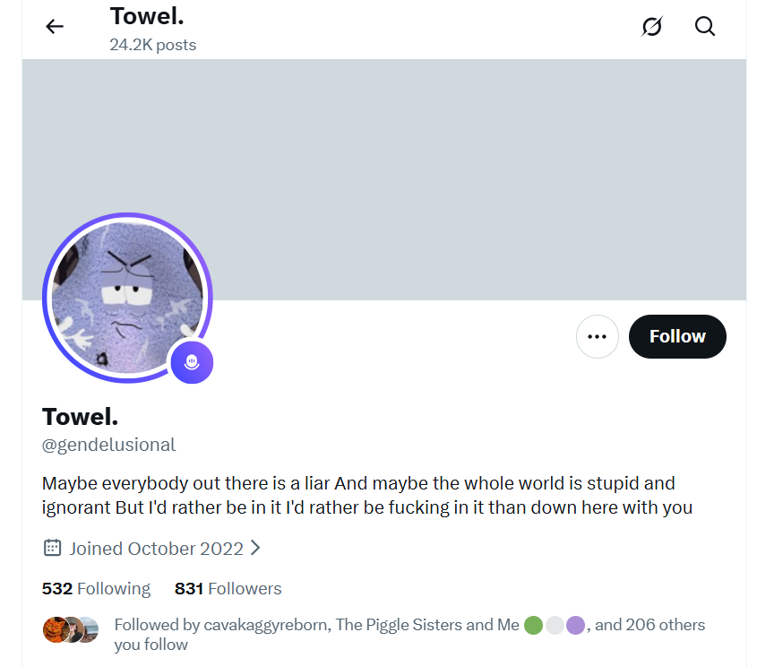

December 2025¶
A stich pops at Fitkoh¶
- I attend a Thai boxing course at Fitkoh.
- On the first morning, while warming up, after having taken two or three paces jogging with everyone around the fitness space, I feel a crunch in my left groin/hip area and massive pain.
- I cannot run another step.
- I’m so disappointed about this, and honestly I don’t really understand what could have happened.
- I probably should have got it seen to, but I know mousse agents are all over everything I do, so I don’t.
- I explain it to myself as a hip injury, and ChatGPT tells me it’s a pulled muscle.
- It isn’t.
- It’s a surgical stich popping open - I guess this incision was repeated a few times on the left side, probably through a weird wounded-area I have still today on my inner groin which didn’t behave like a normal boil or spot.
- I suspect this injury is why they started going in via the right side in 2026, although in January/February in Dorset, I believe they went in again on the left side because my left ovary ached.
A man tests me for the effects of poisoning¶
- At Fitkoh, a man starts chatting with me.
- His name is Oliver.
- He’s British, lives in Dubai, and has a Romanian mobile number.
- He’s with his wife and small boy.
- The wife is speaking Spanish to the boy.
- I’m struggling with the co-ordination of the boxing moves we’re practicing.
- I tell him I was poisoned and have some brain-damage.
- He says he’s a physio of some sort and works with stroke victims.
- He does some tests, like coordination tests.
- I fail spectacularly.
- I ask if he can help me.
- He’s an agent though, so he doesn’t speak to me again and makes sure no-one with him does either.
- His wife barely looks at me whenever I see her.
A man is devastated on hearing what happened to me¶
- I meet another man, cabin crew, at FitKoh.
- Seems like a lot of cabin crew double as kind of law-enforcement… anyway.
- We get on really well, spa a little when we’re doing the boxing moves bit, and have a chat afterwards.
- I tell him I was poisoned and that’s why my coordination is all over the place.
- I think one of his colleagues must have elaborated a little for him later on because the next time I see him, he is looking at me with tears in his eyes and he looks angry enough to murder someone.
- I’m so brain-damaged, this is all a little out-of-context so I don’t recognize him at the time, and only realize it was him later.
- Fake X accounts confirm it.
- I forgot his name but he’ll remember me.
Snakes at Napasai¶
- The first time I go to Fitkoh - just after the stich snaps in my groin - I was staying at a hotel called Napasai.
- It’s a short bike ride to Fitkoh, like 5 minutes.
- I just remember being so utterly exhausted I could hardly get it up the hill, but I guess surgery in Bangkok can explain that.
- I was pushing myself because there was no explanation for it.
- Anyway, as before, there are agents all over me at the hotel, many of them very Jewish looking.
- I’m at the beach one day, and I see a snake, quite a big one coming down the tree into the sand.
- I point to it and the beach man goes over - nice man, can’t remember his name, I made a lot of hotel-staff friends over the last years, they’re the only people who spoke semi-normally to me - and it bites him as he picks it up to leave it in the forest area.
- At the same time, I see a baby snake coming down the tree after the big one, and for some reason I know it’s going to be coming in my direction.
- It does.
- The Asian-American beside me at the beach is surprised I knew that.
- I think there were probably three surgeries: one at the Anantara, one at the Bangkok Residences, and one at Napasai too.
- And I think they all went in via the same incision, weakening it every time, and causing me total and inexplicable exhaustion which was normal but I should have been told to bed rest, except they were sedating me to perform surgery.
- So not knowing what’s going on I start Thai Boxing and I’m injured in the very first seconds.
- Absolute b*&*&*tards.
Thailand fasting and detox clarity¶
- After Napasai, I go to Lamai to fast and detox as normal.
- It’s day seven of the fast and detox program.
- I’m peaceful.
- I’m feeling well too; free of a lot of the year’s poison and toxins.
- I go for a nap in the afternoon.
- I’m not tired, I just need to rest for a bit.
- I’ve been lying down a short while and I suddenly see something in my mind’s eye which causes me unease…
- I’m in my bed at Carrer Furs.
- Sitting on the left side of the bed to me is a man.
- He has no shirt on.
- I can’t see if he is wearing anything on his bottom half as my duvet is in the way.
- He has the build of the swimmer in the
@jctot19profile, but older and with a more defined musculature.

- He would match most closely the build of Marc, number two trumpet teacher, the man who turned up to chamber music class at the conservatory the most.
- He is wearing a face paint mask.
- The top-half of his face is painted with demonish black and white, vertical thin white stripes coming down his from the top of his head.
- He is screaming and shouting and shaking his head around in a most bizarre manner.
- In his hand he has what looks like one of my kitchen tea towels.

- Is this where we get the towel meme they’ve been using since 13th March 2024?

- He holds it taut at both ends, stretching and twisting it.
- He slaps the bed with it.
- Just like the Jitendra Das lookalike did with his napkin at dinner one night at the Polygon conference in Bali.
- It feels too distressing to witness.
- I ask for guidance.
- I start thinking about Winston May & Nicky and remember that in 1989 Winston had told me they’d both recently traveled to Spain.
- I get up and write about it.
- I lose my sense of peace for a good few hours.
- Something tells me that what I saw was related to events on 13th March 2024 when I woke up certain I was going to be murdered and texted everyone I knew (Chris BJ, Alessandra, Brenda, Sandra, maybe others) to that effect.
Thoughts on this
- I think this probably did happen, but not on 13th March 2024.
- That event was a bunch of teachers and perverts suffocating me with my pillows and duvet in my bedroom while I was sedated to make sure I left my studies at the conservatory.
- It worked too; I quit the next day.
- It also gave me brain-damage from the lack of oxygen.
- I guess I was holding up the next session of switcheroo porn for one of the minor girls…
- Probably the British girl given we Brits seem to be the main source of feed for these animals; the feed that no-one will do anything to help.
- Must have been really annoying for them, all that delay.
Someone dresses up as Gabriel Silva from Polygon¶
- I’m relaxing by the beach a couple of days after arriving.
- An American is standing at the posh hut nearest the beach talking to someone.
- He has dressed up to look like Gabriel Silva; cap, shorts.
- Is he putting on his accent too; he sounds a bit like him also?
- He’s talking to the other person about how he’s just got divorced.
- I wonder why they would be winding me up like this?
- Is it so I include the matter here?
- I guess so.
- Are they still doing the who goes to prison deals?
- I guess so.
- I see the man a few days later, and he looks completely different and appears to be with a bunch of other Americans and his accent is nothing at all like Gabriel’s, but he is definitely the same size, shape, and hair-color, the way they do.
- In September 2026, I’m glad to see evidence of how they were messing with my head back then about an ongoing investigation, and I also think Gabriel Silva is a CIA spy sent to Polygon knowing fully well what was intended for me in Bali.
Someone tells me to pack and puts a date and time in my Google calendar¶
- I’m at the restaurant.
- A couple sits beside me talking loudly about how they had to do something related to leaving suddenly…
- I’m in the massage parlour - no-one around remember cos they get businesses closed down - and a woman comes in and we’re beside each other on the tables - 12 other empty tables - and she’s saying she has to pack quickly, she’s being picked up.. and other hints and suggestions.
- I get back to my room and someone has ADDED a calendar entry to my Google calendar.
- It says: Leaving at 2am.
- I feel like this is a trick, but I’m not sure, how could I be sure about anything at that time, so reluctantly I pack, and wait, and no-one comes, and I’m not surprised.
- I think the Americans are f*cking with me, or continually blocking me from getting safe. I think that’s what I’m supposed to believe maybe, or maybe they preferred I thought Israel was f&cking around with me. Whatever. I knew.
- I started to think about the Philip Seymour Hoffman film, A Most Wanted Man, around this time due to this sort of thing, and felt like they wanted to “guantanimo” me, and that’s why I canceled my attendance at TT in January 2026 in Dublin.
- I’m unsure why I signed up for it again in April 2026. What happened to change my mind?
- I think it was probably because they started to communicate with me directly, pretending they were friends, but they had also tried to bully me in Thailand - stopping payments via my phone app, this sort of thing.
- I’m uncertain how I managed to change my mind… perhaps I couldn’t believe that Steve would have been wittingly involved in all this.. it’s unclear.
- I think I was under overwhelming stress, was suffering from injuries and exhaustion after multiple surgeries, and my future’s options had dwindled to zero by January 2026.
- Just before they did this, on the run up to it, I see messages, posts, and adverts about a intense 30 day AI course I’m going to be beginning.. the implication is once I’ve been rescued I’ll be learning AI intensely.
- After the date debacle, these references stop completely.
The cockney geezer with the emotionless young women¶
- A cockney geezer is hanging out on Lamai beach every day.
- He’s about 60, black hair probably dyed, geezer.
- He has two young women with him who don’t speak (are they policewomen?, no, spies).
- He speaks.
- A lot.
- He’s always shouting on his phone.
- One day, I walk past him, and he says: you mean all the way from twenty years ago.
- Seems like he’s referring to me.
- I think: twenty-five.
- Someone flashes a name for him up on X later on after I post this section but I don’t remember it.
I’m having a detrimental effect on the local economy¶
- I seem to be under house arrest of some sort.
- When I go to have a massage at the pier near the resort, a very serious looking older Thai couple walk past me and the woman says, you should stay at home, as she passes me.
- I feel like everyone knows who I am.
- I don’t go back to the pier for a massage.
- The only reason I went there was because there is a strange feeling at the usual place I go to.
- It’s like they close the shop to all other customers when I turn up.
- It’s very strange, and I don’t like it.
- The owner who was very friendly towards me the year before, is now distant.
- They’re calling me khun-khun too, which I think is a little derogatory.
- If I’m so famous everywhere, why hasn’t anyone been nicked yet?
- I guess we had to get every last one of them, innit.
- The last statement being confirmation of things I had been hearing from agents in Thailand.
Another (fake) bridge collapses¶
- What’s the capital of Assyria?

- Wait, I have it in my calendar here…
- WRONG!!!!
- Aaaaaaaahhhhhhhhhhhhh.
- All of it, mousse distraction; they literally took over the whole island with thousands of operatives, putting small business out of regular income.
- All the criminals cowering.
- Getting the local constabulary and locals to pretend to me I was in constant danger.
- Theatrical house-arrest total!
No hole in the knit¶
- The knit itself is an indestructible problem-solving web of Love from God to His Children to remind us that He has not left us, nor has He ever left us, nor will He ever not provide for us.
- A Great Ray.
- Perhaps the greatest of them all, so far.
- Amazing.
- Dennis Moore may have topped it.